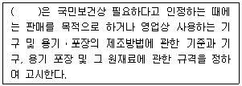
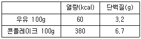
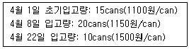

조리산업기사(공통) (2009-07-26 기출문제)
1과목: 식품위생 및 관련법규
1. 집단급식소란 상시 1회 몇인 이상을 기준으로 식사를 제공하는 급식소를 말하는가?
- 30인
- 50인
- 100인
- 200인
(정답률: 96%)

2. 리스테리아균에 대한 설명 중 옳은 것은?
- 리스테리아균에 의한 식중독은 건강인에게 매우 빈번하게 발병한다.
- 냉장 조건에서도 발육하므로 특히 저온 보존식품에 유의해야 한다.
- 열에 대한 저항성이 매우 약하다.
- 치사율이 2~3%로 낮다.
(정답률: 75%)
3. 조리사로 종사할 수 있는 질병은?
- 전염성 결핵
- 콜레라
- 피부병 기타 화농성 질환
- 비활동성의 B형 간염
(정답률: 100%)
4. 다음 중 리케차성 전염병은?
- 콜레라
- 발진열
- 탄저병
- 장티푸스
(정답률: 94%)
5. “유통기한”과 관련된 내용 중 옳은 것은?
- 제조일을 표시하는 경우라도 “제조일로부터 oo일까지”, “제조일로부터 oo월까지”, “제조일로부터 oo년까지”로 표시할 수 없다.
- 도시락의 유통기한은 “oo월 oo일까지”로 표시하여야 한다.
- 주류(맥주, 탁주 및 약주 제외)는 유통기한 표시를 생략할 수 있다.
- 유통기한이 서로 다른 여러 가지 제품을 함께 포장하였을 경우에는 그 중 가장 긴 유통기한을 표시하여야 한다.
(정답률: 77%)
6. 황색포도상구균에 의한 식중독에 대한 설명 중 틀린 것은?
- 구토, 설사와 함께 심한 고열이 발생한다.
- 균에서 발생한 장독소를 함유한 식품을 섭취할 때 일어난다.
- 육류 및 그 가공품, 김밥, 도시락 등이 원인식품이다.
- 균은 식품이나 가검물 등에서 장기간 생존한다.
(정답률: 57%)
7. 덴마크에서 수입한 돼지를 국내에서 몇 개월 이상을 기준으로 사육한 후 국내산으로 유통하는 경우에는 “국내산”이라고 표시하되, 괄호 안에 수입국가명을 함께 표시할 수 있는가? [예시: 삼겹살 국내산(돼지 덴마크산)]
- 2개월
- 3개월
- 6개월
- 12개월
(정답률: 65%)
8. 집단급식소 식중독 예방관리에 대한 설명으로 틀린 것은?
- 조리종사자는 식품위생법에 따라 1년 1회 건강진단을 받는다.
- 조리종사자가 발열, 설사를 하는 경우 작업에 참여하지 않는다.
- 조리장을 완전 무균상태로 관리한다.
- 조리종사자는 손톱을 항상 짧게 다듬고 매니큐어를 칠하지 않는다.
(정답률: 91%)
9. 조리사를 두어야 하는 영업장은?
- 즉석판매제조ㆍ가공업
- 단란주점
- 일반대중음식점
- 복어조리점
(정답률: 100%)
10. 식품 중의 유해물질과 인체와의 관계에 대한 설명 중 옳은 것은?
- 수용성 물질이 지용성 물질보다 잘 흡수저장된다.
- 수용성 물질은 인체 지방조직에 잘 축적된다.
- 지용성 물질이 수용성 물질보다 잘 배설된다.
- 지방질 식품은 지용성 물질의 흡수를 촉진한다.
(정답률: 60%)
11. 식중독의 예방을 위하여 식품접객시설에 HACCP제도를 적용할 경우 관리기준으로 가장 많이 이용하는 것은?
- 균수
- 온도
- 습도
- pH
(정답률: 42%)
12. 안전성이 높고 유기물의 영향을 크게 받지 않으므로 소독제의 효력을 표시하는 기준이 되는 것은?
- 양성비누
- 포르말린
- 표백분
- 석탄산
(정답률: 89%)
13. 다음은 식품위생법의 기준과 규격에 관한 내용이다. ( )안에 알맞은 것은?

- 시장ㆍ군수ㆍ구청장
- 보건복지가족부장관
- 농림수산식품부장관
- 식품의약품안전청장
(정답률: 79%)
14. 인공 착색료에 관한 설명 중 틀린 것은?
- 타르색소는 값이 싸고 색이 선명하며, 사용이 간편한 장점이 있다.
- 식용 타르색소는 독성이 낮은 염기성 색소가 주로 허가되어 있다.
- auramine은 염기성 황색색소로 사용이 금지된 타르색소이다.
- 식용 타르색소라도 사용 대상 식품과 사용량이 제한된다.
(정답률: 50%)
15. 노로바이러스에 의한 식중독의 예방대책으로 적합하지 않은 것은?
- 감염자의 변, 구토물과 접촉하지 않도록 한다.
- 과일과 채소류는 철저히 잘 씻는다.
- 어패류는 될 수 있는 한 완전히 가열하여 먹는다.
- 항생제와 예방 백신을 접종한다.
(정답률: 74%)
16. 알레르기성 식중독이 발생할 가능성이 가장 큰 생선은?
- 꽁치
- 갈치
- 숭어
- 명태
(정답률: 90%)
17. 미생물 번식과 식품의 부패에 영향을 미치는 요인으로 가장 거리가 먼 것은?
- 온도
- 미생물의 운동성
- 수소이온농도
- 수분활성도
(정답률: 63%)
18. 우리나라에 가장 흔하며, 집안의 부엌 주변과 따뜻하고 습기가 많은 곳에서 서식하는 바퀴는?
- 이질바퀴
- 독일바퀴
- 검정바퀴
- 일본바퀴
(정답률: 90%)
19. ppm 단위에 대한 설명으로 옳은 것은?
- 100분의 1을 나타낸다.
- 10000분의 1을 나타낸다.
- 1000000분의 1을 나타낸다.
- 1000000000분의 1을 나타낸다.
(정답률: 82%)
20. 화농성 질환이 있는 조리사가 만든 음식물을 섭취하고 식중독이 발생하였다면 어떤 독소에 의한 것인가?
- 엔테로톡신(enterotoxin)
- 테트로도톡신(tetrodotoxin)
- 아마니타톡신(amanitatoxin)
- 아플라톡신(aflatoxin)
(정답률: 58%)
2과목: 식품학
21. 지미성(감칠맛) 아미노산으로 주로 조미료의 구성성분으로 쓰이는 것은?
- glutamic acid
- methionine
- proline
- arginine
(정답률: 79%)
22. 단백질에 대한 설명으로 옳은 것은?
- 식품에 존재하는 자연 단백질을 구성하는 아미노산은 약 20여 종이다.
- 단백질은 C, H, O의 원소로만 구성되어 있다.
- 불필수아미노산과 필수아미노산은 체내에서 합성되지 않으므로 식품으로 섭취해야 한다.
- 물에 잘 녹지 않고 유기용매에 잘 녹으며, 여러 대사반응의 조효소로만 작용한다.
(정답률: 54%)
23. H2O의 분자량이 18일 때 40%의 포도당(분자량 180)용액의 Aw는 약 얼마인가?
- 0.65
- 0.75
- 0.80
- 0.94
(정답률: 53%)
24. 과일 주스의 청징조작에 쓰이지 않는 성분은?
- 활성탄
- 펙틴분해효소
- 왁스
- 달걀흰자위
(정답률: 69%)
25. 황태는 어떤 원리에 의해 건조하여 만드는가?
- 분무건조
- 감압동결
- 동결건조
- 열풍건조
(정답률: 77%)
26. 펙틴(pectin)물질의 특성이 아닌 것은?
- 기본단위는 갈락튜론산이다.
- 물에서 교질용액을 형성하며 점도가 크다.
- 펙틴산, 펙트산, 펙틴, 프로토펙틴으로 구분된다.
- 모든 펙틴은 산과 당이 있으면 겔을 형성한다.
(정답률: 78%)
27. 거품을 낸 달걀흰자를 셔벗이나 캔디를 만들 때 섞어주면 결정체 형성을 방해하여 미세하게 만든다. 이것은 달걀의 무슨 성질 때문인가?
- 유화제
- 팽창제
- 간섭제
- 농후제
(정답률: 72%)
28. 결합수의 특성이 아닌 것은?
- 낮은 온도(-30~-20℃)에서도 잘 얼지 않는다.
- 100℃ 이상으로 가열하거나 압력을 가해도 제거하기 어렵다.
- 용매로서 쉽게 이용된다.
- 미생물의 번식과 발아에 이용되지 못한다.
(정답률: 83%)
29. 무즙에 당근즙을 가하면 비타민 C의 파괴가 현저하게 일어나는 이유는?
- 당근에는 아스콜비나제(ascorbinase)가 많기 때문
- 당근에는 산화제 성분이 많이 들어있기 때문
- 당근에는 프로비타민(protitamine)A가 들어있기 때문
- 무에는 메르캅탄(mercaptane)이 들어있기 때문
(정답률: 43%)
30. sesamol을 함유하고 있어 산태에 대한 안전성을 높여주는 기름은?
- 들기름
- 유채기름
- 콩기름
- 참기름
(정답률: 75%)
31. 식품에 관한 설명 중 틀린 것은?
- 유기식품이란 제조, 가공 방법상 식품첨가물을 일체 사용하지 않고 만든 것이다.
- 레토르트식품이란 기밀성 용기에 밀봉해서 고압 살균한 식품이다.
- 건강기능식품이란 인체에 유용한 기능성을 가진 원료나 성분을 사용하여 제조한 식품이다.
- 신선편이식품이란 생산 당시의 신선도를 최대한 유지한 상태로 저장유통하여 가공처리를 최소화, 품질은 최대화시키는 것이다.
(정답률: 57%)
32. 생체 내에서 유지의 기능에 대한 설명 중 틀린 것은?
- 열량소로 이용
- 효소, 호르몬 등의 주요 구성 성분
- 지용성 비타민의 흡수를 도움
- 기관의 보호 작용
(정답률: 57%)
33. 콩류에 대한 설명으로 옳은 것은?
- 두류는 메티오닌(methionine)함량이 많고 리신(lysine)함량은 적다.
- 생콩에는 트립신(trypsin)을 활성화시키는 단백질이 있다.
- 콩나물은 대두에 비하여 비타민 C의 함량이 많다.
- 콩단백질은 대부분 물에 녹지 않는다.
(정답률: 82%)
34. 불포화지방산에 대한 설명으로 맞는 것은?
- 팔미트산, 스테아르산 등이 있다.
- 불포화지방산이 많으면 요오드값이 낮다.
- 융점과는 큰 관계가 없다.
- 천연 불포화지방산의 이중결합은 보통 cis형이다.
(정답률: 53%)
35. 다음 당류 중 비환원당은?
- 맥아당(maltise)
- 설탕(sucrose)
- 과당(fructose)
- 유당(lactose)
(정답률: 47%)
36. 청국장 발효시의 최적온도는?
- 15℃ 전후
- 25℃ 전후
- 40℃ 전후
- 50℃ 전후
(정답률: 64%)
37. 육엑스분(meat extract)에 대한 설명 중 틀린 것은?
- 육류를 물과 함께 가열할 때 용출되는 성분으로 약 2%에 달한다.
- 유기산으로 소량의 succinic acid도 함유한다.
- 육엑스분 성분은 모두 단백질이 분해된 물질들이다.
- inosinic acid, glutamic acid가 주된 맛 성분이다.
(정답률: 70%)
38. 맥주의 쓴맛 성분으로 맥주에서 방부제 역할을 하는 것은?
- quinine
- micotine
- caffeine
- humuline
(정답률: 50%)
39. 아침식사로 우유1컵(200g)과 콘플레이크(50g)를 먹었다면, 섭취한 총열량과 총단백질량은?

- 220kcal, 4.95g
- 310kcal, 9.75g
- 440kcal, 9.90g
- 500kcal, 13.10g
(정답률: 84%)
40. 유지의 화학적 특성에 대한 설명 중 옳은 것은?
- 요오드가는 구성지방산의 불포화도에 대한 지표로 유지가 산패되면 낮아진다.
- 과산화물가는 유지 산패의 지표로 산패가 진행됨에 따라 계속 증가한다.
- 유지를 구성하는 고급지방산의 상대적 비율이 높아지면 비누화가 높아진다.
- 마가린과 버터를 구별하기 위해 플렌스케가를 주로 사용한다.
(정답률: 45%)
3과목: 조리이론 및 급식관리
41. 메뉴 메시지의 작성 시 고려하여야 할 사항이 아닌 것은?
- 내용은 이해하기 쉽도록 작성하여야 한다.
- 메뉴 용어는 단순한 표기 방법을 써야 한다.
- 메뉴는 신축성의 여지를 가지고 있어야 한다.
- 메뉴는 식음료의 품명과 내용을 반드시 원어로 표기하여야 한다.
(정답률: 65%)
42. 유지의 식품 조리학적 기능이 아닌 것은?
- 공기 제거
- 쇼트닝 효과
- 유화
- 열전달 매체
(정답률: 74%)
43. 종업원에게 요구되는 직무상의 여러 조건을 결정하는 과정으로서 직무개선을 위한 기초자료가 되는 것은?
- 채용관리
- 인사고과
- 직무분석
- 교육훈련
(정답률: 67%)
44. 급식실의 위치와 구조의 조건으로 바람직하지 않은 것은?
- 환기, 통풍이 잘 되는 곳
- 고온다습하지 않은 곳
- 능률적으로 작업동선이 이루어지는 구조
- 지하수를 사용하는 곳
(정답률: 75%)
45. 시금치나물 500명분을 준비할 때 총 발주량은 약 얼마인가? (단, 1인분 가식량 시금치 70g, 폐기율 6%이다.)
- 30kg
- 37.3kg
- 40kg
- 42.5kg
(정답률: 74%)
46. 식재료를 씻는 방법으로 옳은 것은?
- 채소류는 고인 물에 한번만 씻어 영양소 유출을 막는다.
- 생선류는 목적에 맞도록 자른 후 깨끗이 씻는다.
- 달걀은 씻지 않거나 조리 직전에 씻는다.
- 뿌리가 붙어 있는 채소류의 경우에는 뿌리가 붙어 있는 채로 씻는다.
(정답률: 77%)
47. 육류의 연화와 관련된 설명으로 틀린 것은?
- 파파인, 브로멜린, 프로테아제 등의 단백질 분해효소는 실온에서 활동이 활발하다.
- 1.3~1.5%의 식염첨가는 단백질의 수화력을 증가시켜 연화시킨다.
- 육의 pH는 산성에서 수화력이 증가되어 고기가 연하고 맛있다.
- 단백질 분해효소를 과다하게 사용하면 오히려 다즙성이 감소하여 푸석푸석해 진다.
(정답률: 24%)
48. 푸른잎 채소를 데칠 때 색소가 안정되고 영양소 파괴가 적게 일어나는 방법은?
- 조리수에 소금을 넣는다.
- 조리수에 식초를 넣는다.
- 조리수에 중조를 넣는다.
- 물을 많이 넣고 약한불에 오래 삶는다.
(정답률: 80%)
49. 쌀뜨물에 죽순, 우엉 등을 담그면 변색이 방지되는 이유는?
- 쌀뜨물에 쌀겨효소가 녹아 있으므로
- 쌀뜨물의 쌀겨효소가 이들의 표면을 둘러싸서
- 쌀뜨물의 전분 콜로이드 입자가 산소와 만나므로
- 쌀뜨물의 전분 콜로이드 입자가 이들의 표면을 둘러싸서
(정답률: 73%)
50. 설탕의 단맛 강도를 100이라 할 때 포도당의 강도는?
- 32
- 74
- 130
- 173
(정답률: 70%)
51. 검수업무가 수행되는 순서대로 나열된 것은?
- 물품과 구매청구서의 대조 → 물품의 인수 → 창고에 저장 → 검수에 관한 기록
- 물품의 인수 → 배달된 물품과 송장의 대조 → 검수에 관한 기록 → 창고에 저장
- 배달된 물품과 송장의 대조 → 창고에 저장 → 꼬리표 부착 → 검수에 관한 기록
- 물품과 구매청구서의 대조 → 창고에 저장 → 검수에 관한 기록 → 배달된 물품과 송장의 대조
(정답률: 75%)
52. 빈혈증 환자에게 필요한 철분을 섭취하기 위해 권해야 할 식품끼리 묶인 것은?
- 오이, 가지
- 쌀, 사과
- 생굴, 감자
- 쇠간, 시금치
(정답률: 83%)
53. 대두로 콩자반을 만들 때 ‘단단한 정도, 주름, 광택’ 과 관련이 가장 깊은 것은?
- 불의 세기
- 물의 분량
- 간장의 분량
- 설탕의 분량
(정답률: 80%)
54. 식품, 비품창고의 주요 설비가 아닌 것은?
- 선반, 저울
- 후드, 덕트
- 청소도구함
- 방충, 방서설비
(정답률: 77%)
55. 다음은 어떤 식당의 4월 한 달간 통조림 구입 내역이다.

4월말에 실사재고를 한 결과 15개의 재고가 남았을 때 후입 선출법에 의한 재고 금액은?- 18700원
- 16500원
- 17800원
- 15600원
(정답률: 58%)
56. 두부를 부드럽게 조리하는 방법으로 적합하지 않은 것은?
- 두부를 1%의 소금물에 담가 두었다가 조리한다.
- 물에 먼저 두부를 넣고 센불에서 끓인 후 0.5~1%의 소금으로 간을 한다.
- 된장찌개를 조리할 때 다른 재료 모두 첨가하고 간을 한 다음 두부를 넣고 80℃ 부근에서 단시간 끓인다.
- 조리수나 그릇을 통해 철이나 알루미늄이온이 두부와 접촉하지 않도록 한다.
(정답률: 80%)
57. 어떤 달의 임금지급액은 1,500,000원이고, 총 작업시간은 320시간이다. 제품 200,000개를 제조하는데 34시간을 사용하였다면, 이 제품에 부과할 노무비는?
- 255원
- 2,400원
- 159,375원
- 937,500,000원
(정답률: 90%)
58. 식단 작성의 목적이 아닌 것은?
- 운영 비용 절감
- 합리적인 식습관의 형성
- 잔반율 증가
- 균형 있는 영양공급
(정답률: 83%)
59. 찜을 할 때의 주의사항이 아닌 것은?
- 찜통바닥의 물이 비등하여 찜통내의 온도가 높아질 때까지 강화로 가열하고 그 후 재료를 넣는다.
- 물은 찜을 할 때 찜틀 아래쪽 부분의 90 ~ 95% 가량이 적당하다.
- 고온, 장시간 가열이 필요한 경우에는 밀폐성이 있는 금속성 찜기가 적당하다.
- 찜통내의 온도가 충분히 올라갈 때까지 뚜껑과의 사이에 건조한 수건을 사용하는 경우도 있다.
(정답률: 69%)
60. 젤리형성에 대한 설명으로 틀린 것은?
- 펙틴 1%, pH 3.0~ 3.3, 당 65%의 조건에서 젤리화가 잘 일어난다.
- 펙틴의 분자량이 작고 분자의 길이가 짧을수록 질이 좋은 젤리가 형성된다.
- 과숙된 과일의 펙트산은 COO-가 메틸기와 에스테르를 형성하지 않아 젤리형성이 어렵다.
- 과즙만 가열하면 겔의 강도가 약해지므로 젤리를 만들 때는 처음부터 설탕을 넣고 끓인다.
(정답률: 50%)
4과목: 공중보건학
61. 실내 자연환기의 원동력이라 볼 수 없는 것은?
- 실내외의 온도차
- 기체의 확산력
- 대기압의 차
- 외기의 풍력
(정답률: 75%)
62. 인체에서 수분이 몇 % 정도 상실되면 생명의 위험이 초래되는가?
- 3%
- 5%
- 10%
- 20%
(정답률: 74%)
63. 인분을 비료로 사용한 채소를 생식할 겨우 감염되는 기생충 질환은?
- 선모층증
- 화중증
- 사상충증
- 무구조충증
(정답률: 50%)
64. 다음 중 부적당한 조명에 의한 피해가 아닌 것은?
- 근시
- 잠함병
- 안구진탕증
- 작업능률저하
(정답률: 89%)
65. 인간 병원소라고 볼 수 없는 자는?
- 환자
- 건강한 자
- 보균자
- 무증상 감염자
(정답률: 80%)
66. 환경위생적인 관리를 철저히 하여 예방되는 전염병과 거리가 먼 것은?
- 수인성 전염병
- 곤충매개 전염병
- 호흡기계 전염병
- 소화기계 전염병
(정답률: 50%)
67. 식품을 통해서 전염되는 인수공통전염병이 아닌 것은?
- 결핵
- 장티푸스
- 브루셀라증
- 탄저
(정답률: 45%)
68. 경구감염을 일으키지 않는 기생충으로만 짝지어진 것은?
- 요충, 편충
- 사상충, 트리코모나스
- 회충, 광절열두조충
- 유구조충, 간흡충
(정답률: 38%)
69. 호소(湖沼)가 부영양호로 변할 때 나타나는 현상이 아닌 것은?
- 산소의 농도가 급격하게 증가한다.
- pH는 약알칼리성을 띤다.
- 조류가 과다하게 발생한다.
- 투명도가 감소한다.
(정답률: 36%)
70. 레이노드병과 관계있는 것은?
- 분진
- 진동
- 고열
- 고기압
(정답률: 70%)
71. 흙 속의 녹슨 쇠붙이에 짤릴 경우 감염될 수 있는 것은?
- 황열
- 장티푸스
- 페스트
- 파상풍
(정답률: 87%)
72. 대기오염과 밀접한 관련성이 있는 것은?
- 기온상승
- 기온역전
- 고기압
- 해수온 상승
(정답률: 80%)
73. 제1중건숙주인 다슬기로부터 빠져나와 물속을 다니는 폐흡충의 성장단계는?
- 유모유충
- 포자유충
- 유미유충
- 레디아
(정답률: 39%)
74. 일본뇌염의 매개 모기는?
- 중국얼룩날개모기(Anopheles Sinensis)
- 작은빨간집모기(Culex Tritaeniorhyncus)
- 토고숲모기(Aedes Togoi)
- 에집트모기(Aedes Aegyti)
(정답률: 82%)
75. 결핵유병률이 1.0%일 때 그 의미로 적합한 것은?
- X-ray검진 소견에 의한 양성자가 1.0%이다.
- 투베르쿨린 반응 양성자가 1.0%이다.
- BCG 접종률이 1.0%이다.
- 객담검사 양성률이 1.0%이다.
(정답률: 48%)
76. 대기오염의 2차성 오염물질은?
- 먼지(Dust)
- 이산화황(SO2)
- 이산화질소(NO2)
- 오존(O3)
(정답률: 69%)
77. 다음 중 오염도가 가장 높은 것은?
- BOD 18ppm의 물
- BOD 10ppm의 물
- BOD 5ppm의 물
- BOD 1ppm의 물
(정답률: 59%)
78. 환기량이 큰 중성대의 위치는?
- 방바닥 가까이
- 천정 가까이
- 방바닥과 천정의 정중앙
- 방바닥과 천정의 정중앙에서 약간 밑
(정답률: 65%)
79. 쓰레기 처리방법 중 다이옥신의 발생우려가 가장 높은 것은?
- 매립법
- 퇴비법
- 소각법
- 비료화법
(정답률: 79%)
80. 다음 중 화학적 소독제의 조건이 아닌 것은?
- 안정성이 있을 것
- 석탄산 계수가 낮을 것
- 구입이 쉬울 것
- 방취력이 있을 것
(정답률: 78%)